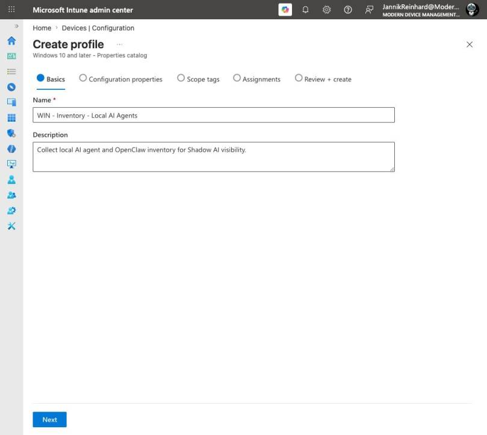
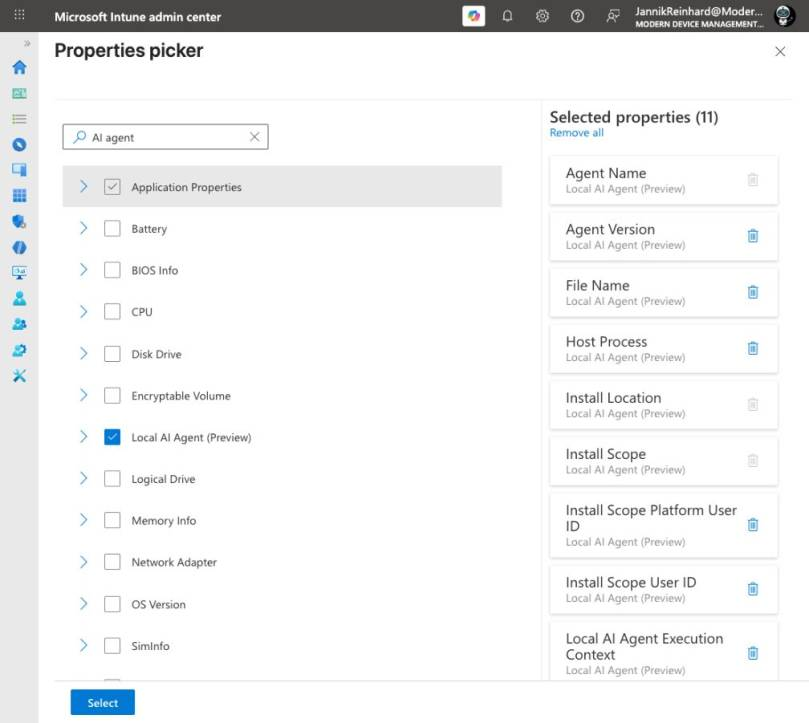

Topic of this page: Intune Shadow AI: Detect and Block OpenClaw. Focus: Detect and Block Shadow AI with Intune: OpenClaw in Practice.
Local AI agents are moving from developer experiments to normal Windows endpoints. They can read files, call tools and act with the permissions of the signed-in user. That makes them useful, but it also creates a new blind spot for endpoint teams. In this blog post I show how the new Intune Shadow AI controls can discover local agents such as OpenClaw, give you useful inventory data and help you decide what to control.
Why is Shadow AI on the endpoint different?
A browser-based AI service is normally visible through network, identity or SaaS controls. A local agent is different. It can run from a command line, a desktop app, an IDE extension, Node.js or Windows Subsystem for Linux. It can also inherit access to local files, repositories, tokens and enterprise services from the user.
The problem is not that every local agent is malicious. The problem is that many organizations cannot answer three simple questions:
- Which local AI agents are installed?
- Under which user and process context do they run?
- Which agents are approved, and which ones should be restricted?
Microsoft now connects three Intune capabilities for this scenario: inventory through the Properties catalog, fleet investigation through Device Query and a Local AI Agent Baseline for OpenClaw. The feature is currently in public preview, so I would treat it as a controlled pilot and not as a finished enforcement product.
How does the Intune Shadow AI workflow work?
I separate the workflow into three phases.
| Phase | Intune capability | Question it answers |
|---|---|---|
| Discover | Properties catalog | Is a local AI agent present? |
| Investigate | Device Inventory and Device Query | Where does it run and in which context? |
| Control | Local AI Agent Baseline – OpenClaw | Which execution paths should I restrict? |
This order matters. Blocking first can affect legitimate Node.js or WSL workloads. Discovery gives you the evidence to create a smaller pilot and test the impact before enforcing anything broadly.
How do I collect the Local AI Agent inventory?
In the Microsoft Intune admin center, go to Devices > Configuration > Create > New Policy. Select Windows 10 and later as the platform and Properties catalog as the profile type.
I used the following profile name in my lab:
WIN - Inventory - Local AI Agents
The description should explain the security outcome, not only the technical setting. I used: Collect local AI agent and OpenClaw inventory for Shadow AI visibility.

On Configuration properties, select Add properties and search for AI agent. The new Local AI Agent (Preview) category contains 11 properties in my tenant. The live picker includes values such as agent name, version, file name, host process, install location, install scope, user identifiers and execution context.

I selected the full category for the first pilot. The most important values are the agent name, install location, install scope and host process. Microsoft specifically recommends collecting the host process because OpenClaw can run through different processes such as node.exe or wsl.exe.
Note: The Properties catalog is for Intune-managed, corporate-owned Windows devices that are Microsoft Entra joined or hybrid joined. Initial inventory data can take up to 24 hours to appear.
How would I assign the profile?
I would not start with all devices. My first assignment would be a small group that contains:
- developer workstations;
- IT admin devices;
- Windows devices used for AI and automation testing;
- one clean reference device without local AI tooling.
The clean reference device is useful. It shows whether the inventory is producing unexpected matches before you use the data for a security decision.
After the profile is assigned, you can open a Windows device and go to Monitor > Device Inventory. For a fleet view, use Devices > Device Query and select the Local AI Agent entity from the schema browser.
Hint: Natural-language KQL assistance does not currently support the Local AI Agent entity. I would build the first query from the property picker instead of guessing field names.
What should I investigate before blocking?
An agent name is only the start. I would review the following context for every result:
| Signal | Why it matters |
|---|---|
| Host process | Shows whether the agent is running through Node.js, WSL or another runtime |
| Install location | Helps separate a managed installation from a user-local copy |
| Install scope | Shows whether the agent is installed per user or for the device |
| User identifier | Helps identify the responsible user and business context |
| Execution context | Shows how the agent is launched and what it might inherit |
| Version | Helps find outdated or unmanaged variants |
I would then classify the result into one of four groups: approved, approved with conditions, unknown, or prohibited. This is more useful than one large allow-or-block list because local AI tools have very different access paths and business value.
What does the OpenClaw baseline actually block?
The Local AI Agent Baseline – OpenClaw (Preview) is available in Intune Endpoint security. It uses Windows controls that disrupt common OpenClaw execution paths. The current Microsoft reference includes settings for WSL and outbound firewall rules for Node.js executables.
That is useful, but it also explains why testing is important. Node.js and WSL are not exclusive to OpenClaw. A broad restriction can also affect developers, automation tools and legitimate applications.
My rollout order would be:
- collect the Local AI Agent inventory;
- review the affected processes and users;
- create an exception list for approved workloads;
- deploy the baseline to a small pilot;
- monitor application and network impact;
- expand only after the pilot is clean.
Important: Microsoft states that the baseline might not block every execution path. I see it as one control in a layered design, not as a complete local-agent security product.
Where does Microsoft Defender fit?
Intune is a good starting point for configuration and inventory. Microsoft Defender for Endpoint goes deeper into discovery and investigation. Its local AI agent discovery can surface supported CLI agents, desktop apps, agentic IDEs and MCP configurations. The supported list includes tools such as Codex CLI, Claude Code, GitHub Copilot CLI, Codex Desktop and Cursor.
For me, the split is clear:
- use Intune to collect device inventory and deploy endpoint controls;
- use Defender to investigate agent, device, identity and MCP relationships;
- use your application and data governance controls to decide which tools are approved.
This is similar to the layered approach I describe in my AI-driven endpoint management post and my Intune Advanced Analytics comparison.
What would I do first?
I would start with discovery, not enforcement. Create the Properties catalog profile, assign it to a representative pilot and document what you find. The most valuable result might not be OpenClaw itself. It might be the first complete picture of local AI tooling on your Windows endpoints.
The feature is still in preview, but the direction is important. Endpoint management is becoming part of AI governance. Local agents are no longer only a developer-tool discussion. They are identities, processes, permissions and data access running on managed devices.
I hope this gives you a practical starting point for testing the new Intune Shadow AI controls without breaking legitimate work.
Stay healthy, Cheers Jannik